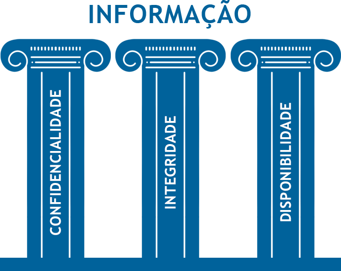

Conceitos básicos de segurança da informação, tipos de segurança e controle de acesso.
Propósito
Conhecer os conceitos de segurança da informação e os tipos de segurança, assim como aplicação deles.
Ela pode ser definida como um dado contextualizado no qual existe uma percepção de valor. Dessa forma, é necessário haver uma atenção quanto à sua preservação.
CICLO DE VIDA DA INFORMAÇÃO
Por se tratar de um dado contextualizado, a informação possui o seguinte ciclo de vida:
CRIAÇÃO -> TRANSPORTE -> MANUSEIO -> DESCARTE
Durante todas essas etapas, a informação deve ser protegida. Seu vazamento em quaisquer etapas pode provocar problemas em vários aspectos.
Hoje em dia, por estarmos na era da informação, é comum sempre levarmos um desses dispositivos no bolso, mochila ou na carteira.
uma solução simples seria compactar os arquivos no pendrive com senha, deixando-os mais protegidos em caso de extravio ou furto.
ASPECTOS DA SEGURANÇA DA INFORMAÇÃO
Dos aspectos da informação, seus três principais requerem cuidados especiais.
Confiabilidade
Capacidade do acesso à informação apenas por quem possui autorização.
Integridade
Possibilidade de alteração da informação por pessoas ou sistemas autorizados.
Disponibilidade
Faculdade de a informação poder ser acessada, em qualquer tempo por pessoas ou sistemas autorizados para tal.

Outros aspectos importantes da Segurança da Informação
Autenticidade
Assegurar que a informação foi gerada por pessoa ou sistema autorizado para isto.
Legalidade
Trata-se do alinhamento da informação e/ou dos processos com normas, portarias, leis e quaisquer
outros documentos normativos, cada um na sua respectiva esfera de atribuição e abrangência.
Não-Repúdio
Também conhecido como irretratabilidade, ele está relacionado ao fato de o emissor negar a autoria de uma informação divulgada.